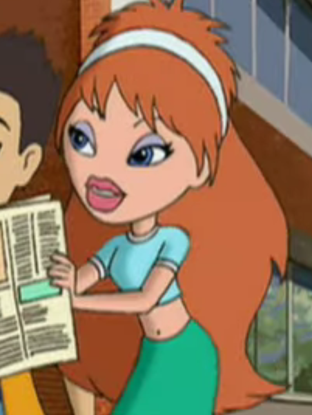
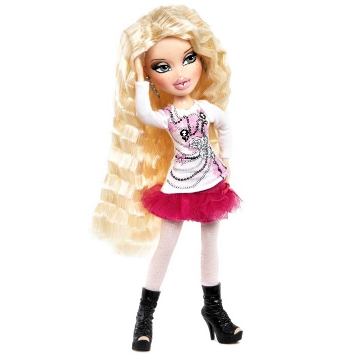
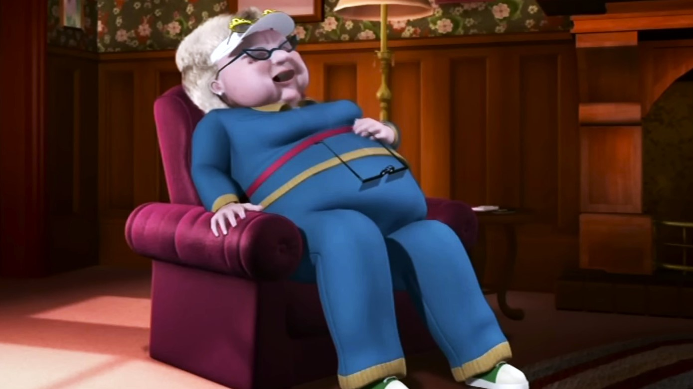

Okay is it cheating to make Meygan both characters? She looks so much like Stella here!
Meygan / Stella

Specifically Genie Magic Meygan! Look at that pink lip gloss. So cvnty!!
Meygan / Pauline

SO cute So Cute
Rina / Iris

Granny